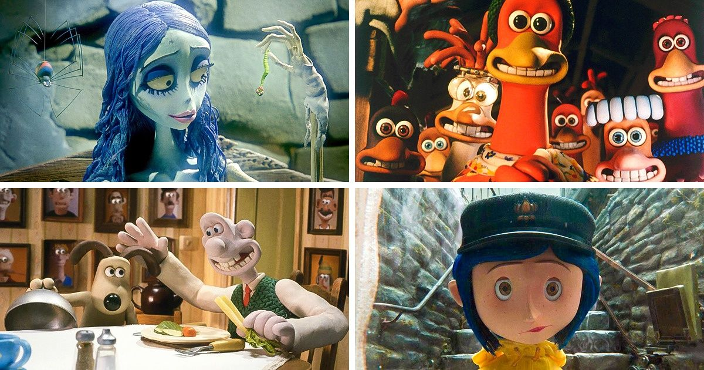

Fã clube do stopmotion
stopmotion é um estilo de animação onde é feita atráves de fotos tirada uma a uma afim de criarem uma narrativa.
Filmes
Diretores
- Tim Burton
- Bruce Bickford
- Terry Gilliam
- Ray Harryhausen
- Panique au Village
Voltar para o topo